Autonomous mobility is constantly evolving, and it will change how we get around forever.
The main goal of this thesis is to develop a solution that could detect and classify the road and objects on it, using networks with Deep Learning.
In this blog you can follow the development of my master thesis, where weekly updates will be made!
Weekly Tasks
Find more about the work that I have been doing.
Week 1 & 2
Getting started
Week 3
First Researches
Week 4
Lar meeting
Week 5
Fast.ai
Week 6
Panoramic Images
Week 7
More Researches
Week 8
Panoramic Images
Week 9
Images Classification
Week 10
Workflow and segmentation
About
Here you can get to know more about me.
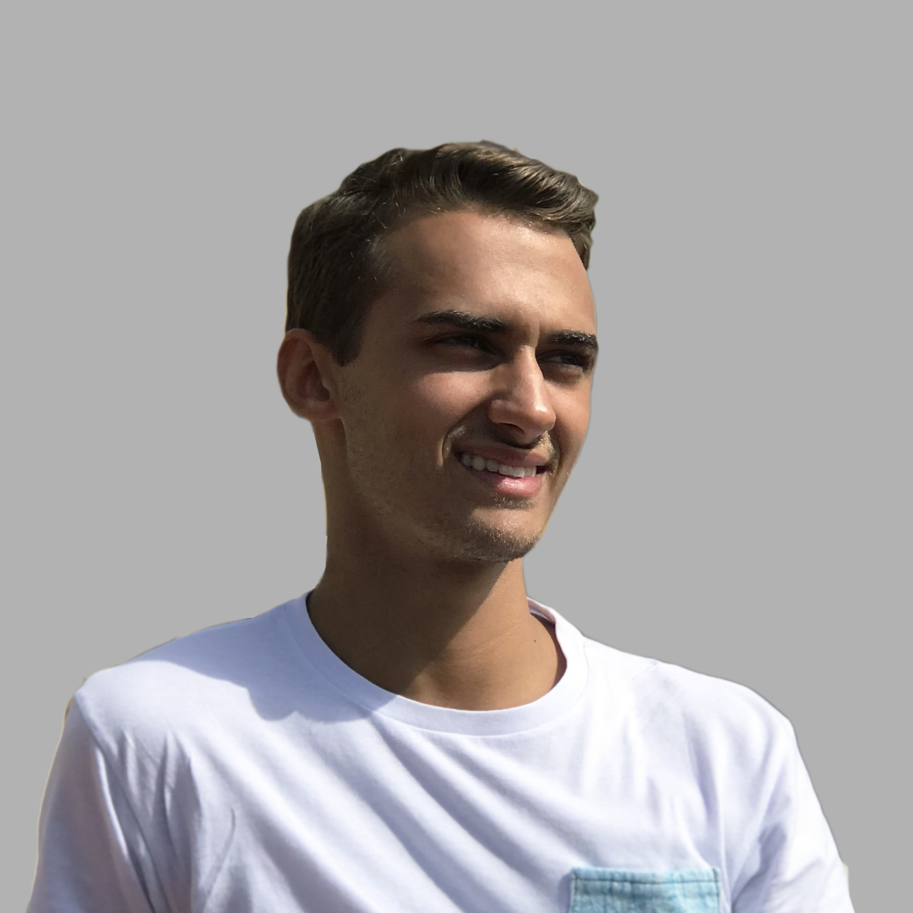
Rúben Costa
Mechanical Engineering Student
My name is Rúben and I am a student of Mechanical Engineering at the University of Aveiro in Portugal.
I am an enthusiast of motorsport and autonomous mobility and I am also the Team Manager of Engenius, the Formula Student team of the University of Aveiro.
I enjoy working as a team and try to explore innovative ideas with the goal of making a difference.
Week 1 & 2
Getting Started.
On these weeks I started by installing the ROS environment and doing the tutorials present in this link to prepare a workshop given by Professor Miguel Oliveira.
In the workshop he showed us the ROS environment and we played a team hunting game where each person had a player and belonged to a team.
During the game, players from the blue team had to hunt those from the red team, red team had to hunt the members of green team and green team had to catch up the blue ones.
In this workshop we used Python2 for programming our players, and used GitHub to work in a corporative environment. After we had fun playing some games, Professor Miguel Oliveira showed us some projects where he used ROS.
I also have been writing a preliminary report for my dissertation, where I read about the work that had been done by previous students and also started to explore a litle bit more about Deep Learning.
At the end of the week I had a meeting with Professor Vítor Santos, where we discussed some points about the preliminary report and the first steps to take.
Date: 23 February 2020
Week 3
First Researches.
On this week I kept researching more about the past projects at LAR and other projects that use neural networks on panoramic images.
I just wrote the preliminary report where I defined the main requirements in terms of hardware for classifying images in real time and also mentioned some networks that I might try for the classification process.
I ended up developing some stands for the positioning of the cameras as you can see on the image bellow.
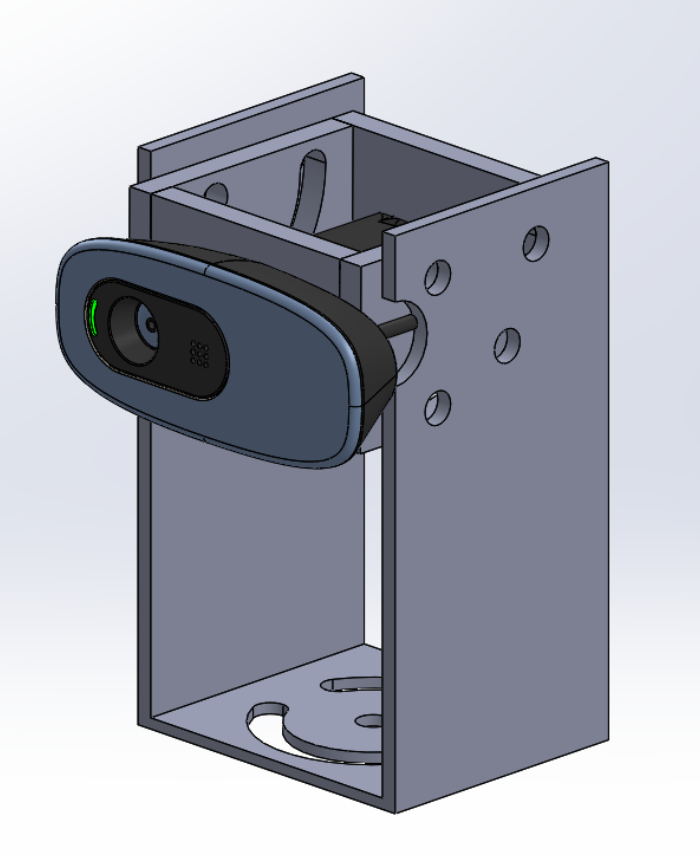
Date: 27 February 2020
Week 4
LAR Meeting.
This week I've been making the last adjustments to the stands for positioning of the cameras, and it ended up as shown on the picture bellow.
I also tried to pass the images from the cameras through ROS topics at the same time as I prepared the LAR Meeting, where I and some colleagues had to present our thesis subjects and the work that we have been doing.
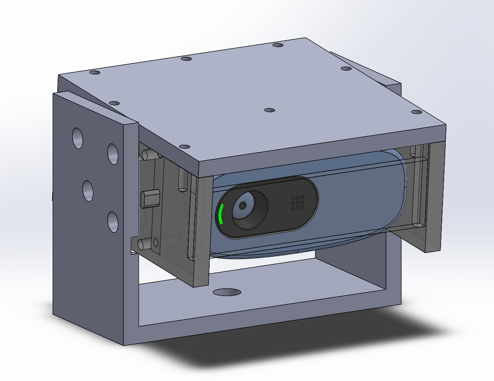
Date: 5 March 2020
Week 5
Fast.ai
My main focus for this week was to explore more about Deep Learning. For it, I used Google Colab to keep doing the Fast.ai pratical Deep Learning course and trained a model with a simple dataset that I create with internet images.
With the training of this dataset I was able to learn more about terms such as learning rate and its influence on the training of a model, and I also became more familiar with some interpretation techniques, like using confusion matrices to find were the model performance was lower.
Date: 12 March 2020
Week 6
Panoramic Images.
The initial objectives for this week were continuing to improve my knowledge about Deep Learning Networks with the fast.ai course and to do some tests with panoramic images on the outside.
For that, I started with the second topic since a LAR researcher had already developed a ROS package to obtain panoramic images.
Briefly, this package package subscribes to images of different ROS topics and creates a panoramic image, which is published in a ROS node.
In order to create the panoramic image, the program tries to find features in the images and compare the keypoints of those to create the transformation matrices of the lateral images.
The process to identify the keypoints of the images is only executed while there are no transformation matrices associated to the left and right images. After the matrices are defined, the program uses these matrices to apply the transformations to the images that the cameras acquire.
After making the necessary changes to the package, I did some tests at home and since the access to the university is restricted due to the outbreak of Covid-19, I decided to mount a system to position the cameras in a car with similar dimensions to the ATLASCAR2.
Bellow you can see different setups that I tested to evealuate if there were any differences between the panoramic images in different situations. As I expected, the third setup was where I got better panoramic images and so I ended up making a more robust setup to be able
to drive the car while images were collected, as you can see in the fourth image.
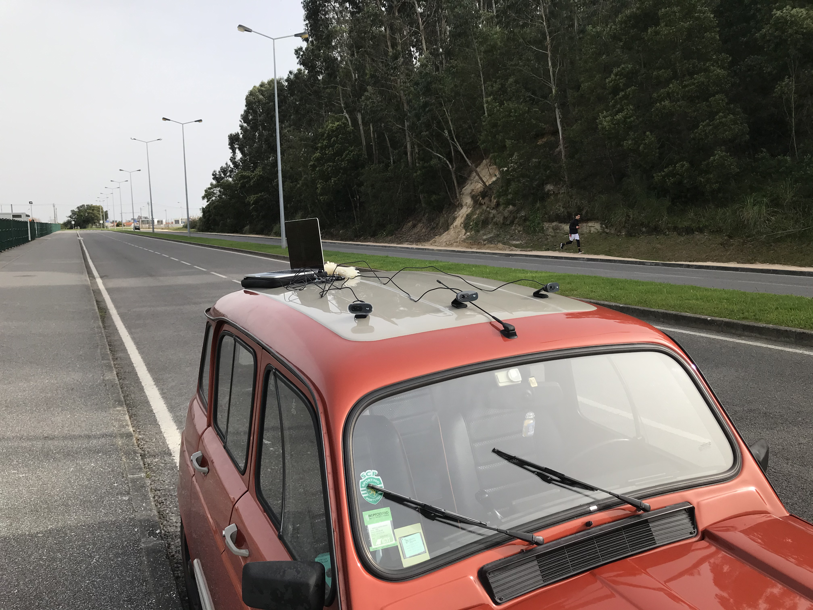
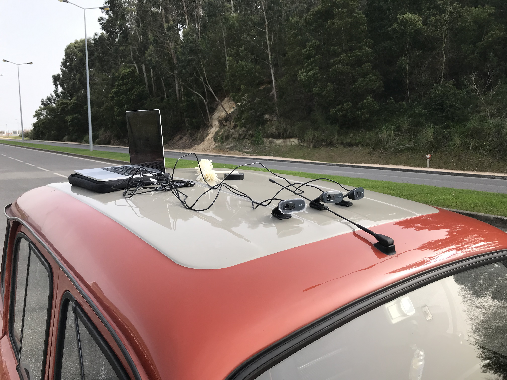
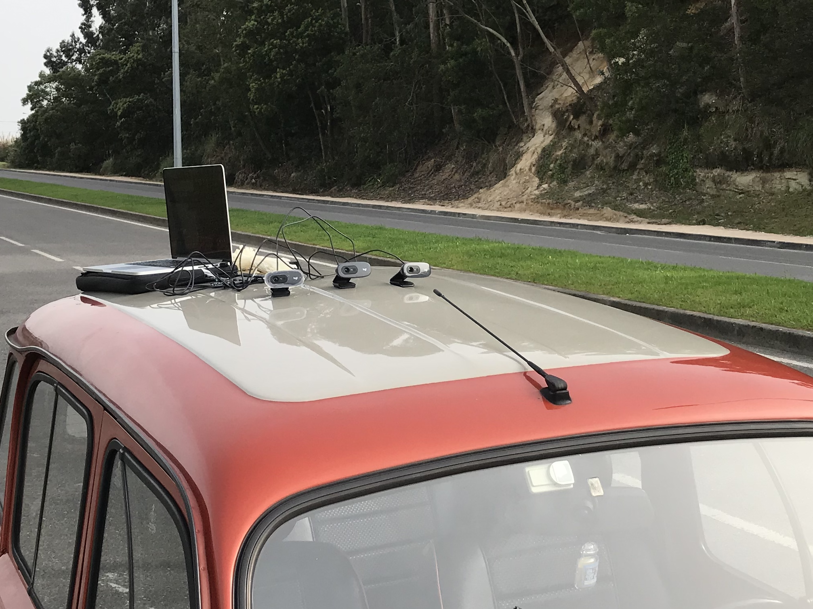
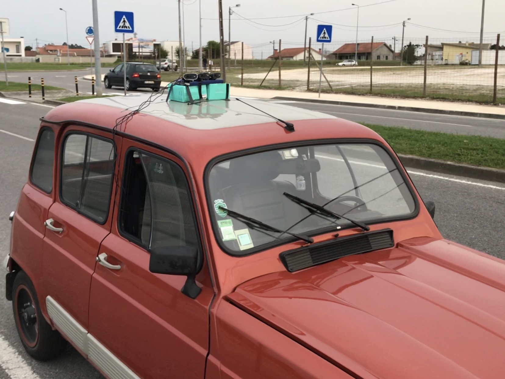
In the following videos you can see the images to be captured while the car is moving and all the videos were recorded with the setup shown above. During the recording, the framerate of the panoramic image droped to 2 FPS while normally I could capture images at 6 FPS.
To increase the framerate I have to try to parallelize the processes that apply the transformations to the lateral images.
With all these tests the time to continue the fast.ai course was not much and so I didn't make much headway over the last week, even so it was quite useful to make these experiments to understand how the panoramic images that are obtained with this package will be useful and
to better understand what will be some constraints of the assembly of the cameras.
Date: 19 March 2020
Week 7
More Researches.
This week I started by researching how to parallelize the program to create the panoramic images
in order to increase the frame rate with which the images were published in the ROS topic. Once the code is in Python, the
first attempts to use multiple computer processors were in this code language.
After some research and some unsuccessful attempts
I began to realize that it would be a little more difficult than expected to adapt the program to do the processing of images in multiple cores.
Therewith I talked to some colleagues to try to understand what I might be doing wrong and they advised me it would be easier to do it
in C++. With this, at the moment I am passing the previous program to C++ to then implement multi-core processing.
During this week I was also able to continue the fast.ai course where I started to explore some image segmentation.
I recently decided to start writing a notebook where I've been writing what I'm learning with the course and some code snippets that may be important later on.
Next week goals are to finish converting the panoramic images program to C++ and explore its multi-processing to see if we can increase the frame rate of the images
and also to go as far as possible in the course to start trying to apply the concepts to the images.
Date: 26 March 2020
Week 8
Panoramic Images.
As mentioned in last week's post, this week I continued to convert the panoramic imaging program to C++ to see if we could get a bigger framerate.
After completing the conversion I tested different scenarios to see which one was more favorable to us and the values of the framerates in each situation are below.
Language
Framerate [FPS]
C++
5,109
C++ with #pragma
5,804
Python
5,601
With these results we can conclude that the conversion to C++ has not become as beneficial as expected however, before leaving the idea of classifying the panoramic
images I may try to find some more solutions in the next few days but if there is no viable solution I will have to explore a solution where the the first thing to do is
the segmentation and after that create a road map mixing up the information of all cameras. You can see a similar solution on the video bellow.
During this time, I also made some test with different amounts of lighting to understand if there was any influence on the speed of image capture.
I ended up testing two different scenarios, the first one with the cameras pointing outside during the day and the other at night. The images below were the two scenarios tested and
while on the left one I managed to capture images to a framerate of 29 FPS on the other I only managed to get a framerate of 15 FPS.
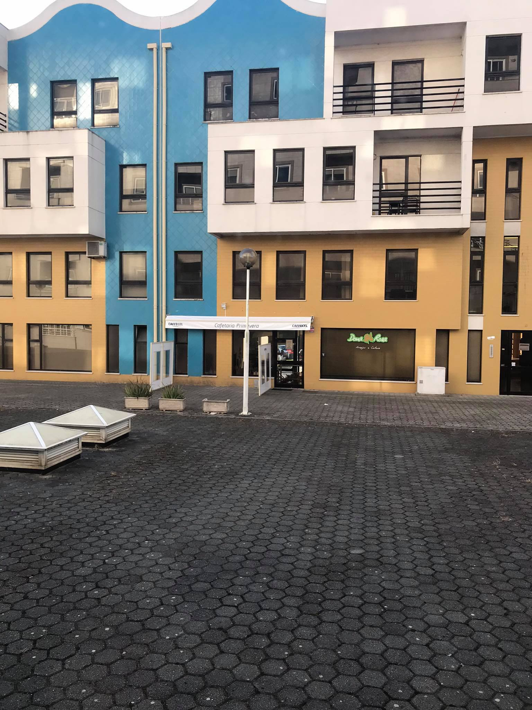
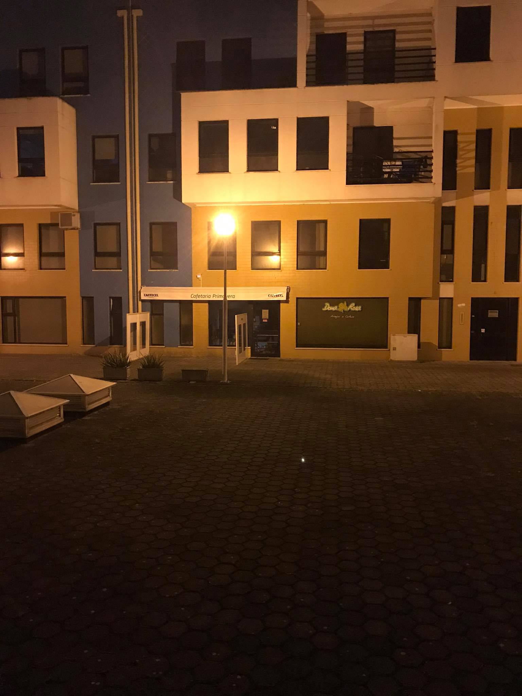
This is due to the fact that when the environment is darker the exposure time that the camera needs to capture a image
is bigger and with that the framerate cannot be the same as in a brighter environment. Therefore, for testing during the day we should not have problems
with the framerate but if we want to test in places with low light we will be limited to 15 FPS.
Date: 2 April 2020
Week 9
Images Classification.
As we saw last week, we couldn't get the framerate needed to have the real-time panoramas, which led to slight changes in the thesis.
So, this week I focused on exploring the classification of the images individually, applying some of the knowledge that I acquired with the fast.ai course.
I used a Resnet34 network and trained it with the Camvid dataset and then applied the trained network to some images.
The results obtained were not very satisfactory as you can see in the images below.
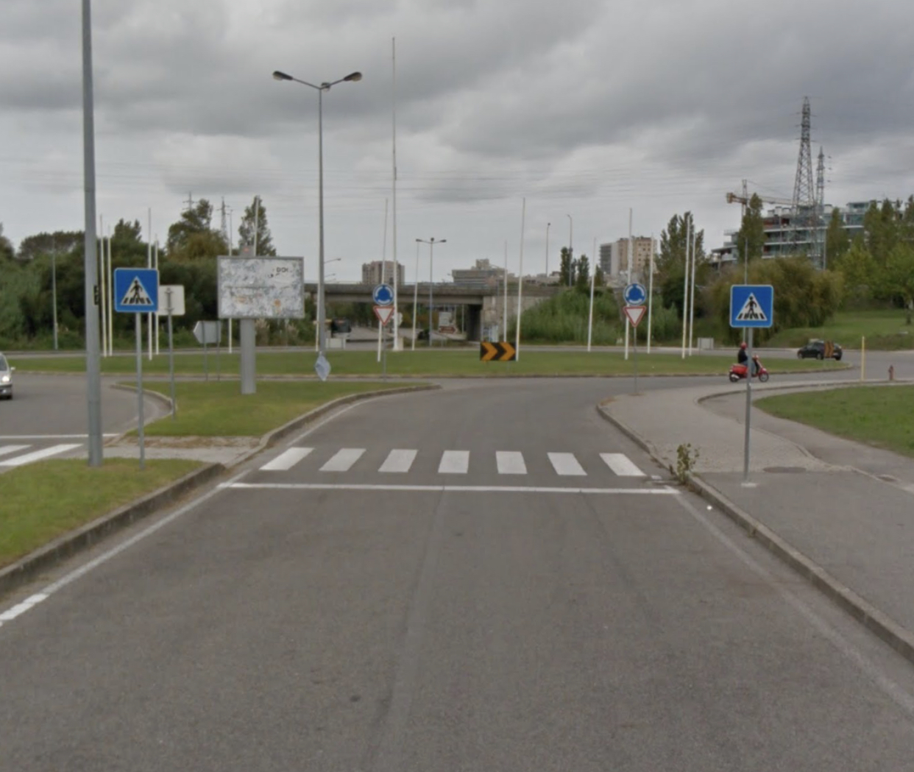
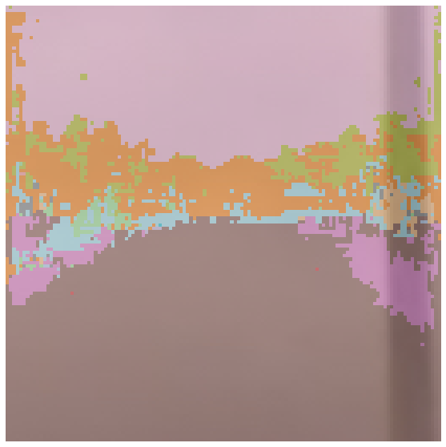
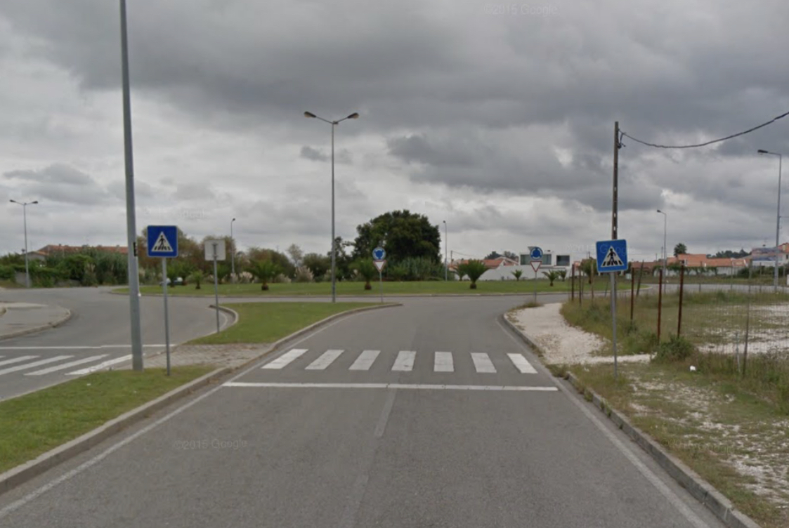
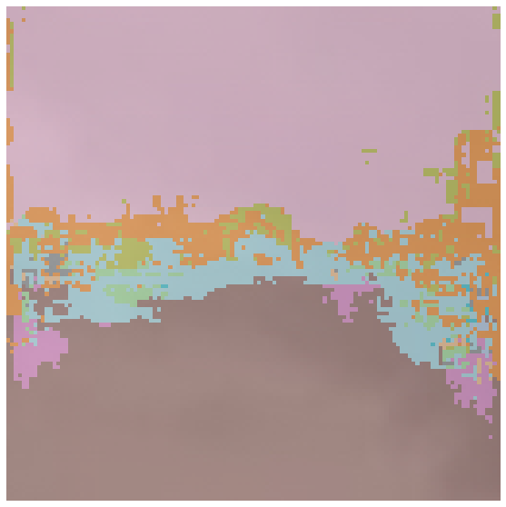
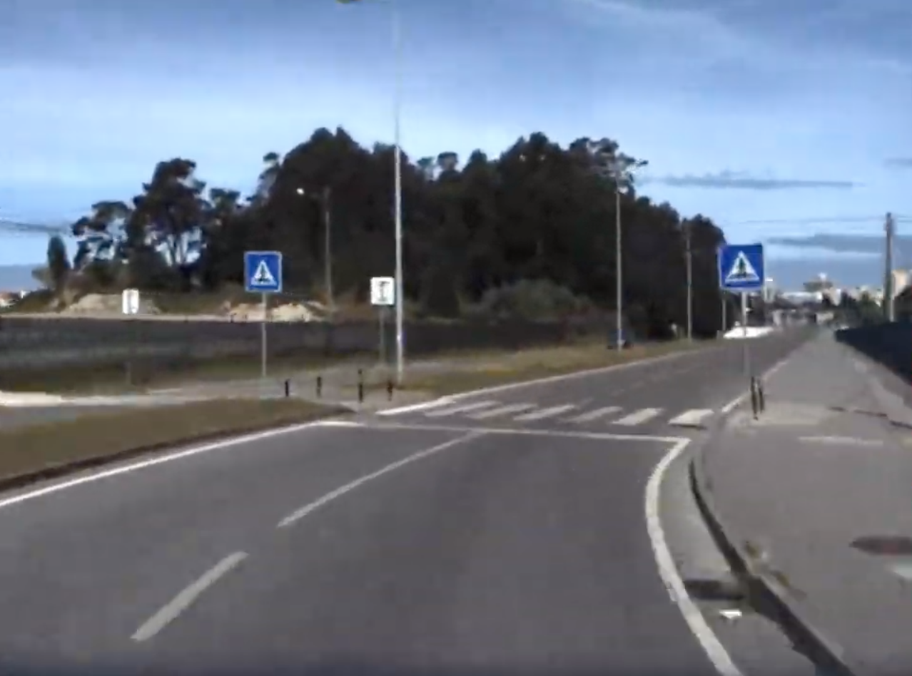
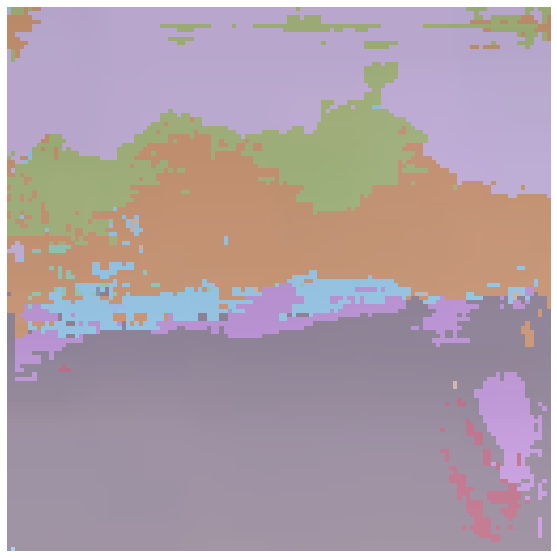
The next step at this point will just be to focus on identifying the road or the lines that limit it in individual images,
exploring different datasets and other types of architectures to define the one that best fits our problem.
Later I should explore the concatenation of the road identified in the different cameras to obtain what will be a panoramic image.
Date: 9 April 2020
Week 10
Workflow and segmentation.
This week I will start to explain the workflow of the program that makes the image segmentation and
after that I'll show you some of the work I've done over the week.
Workflow
Image capture
Extrinsic Parameters Calculation
Image Segmentation
Transformation of segmented parts into polygons
Representation of all polygons detected in a panoramic image
As you can see in the diagram above, the first task the program does is to acquire
the images from the three cameras and then publish them in ROS topics. After that, the program calculates the transformations
from the lateral images to the central one through the keypoints it finds in each pair of photos. This task is used to transform
the perspective of the polygons. The third and fourth task makes the segmentation of the image and converts the result of the segmentation into a polygon.
In the last task the transformations calculated in Task 2 are used to represent in a panoramic image what was detected and its location.
Training Process
Next I will show you some of the work I have done this week, which follows in part what was explained in the previous section.
Before proceeding with the image segmentation, and not having achieved the desired precision with last week's work, I ended up training the network again.
Learning Rate
First, we loaded the parameters of the trained model last week and tried to find out the best learning rate to train our model.
After analyzing the graph, I ended up choosing a learning rate of 3e-5 and trained the model during 10 epochs.
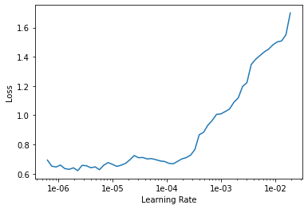
Training
In the table on the left, we can see the evolution of accuracy and losses during training.
The values in the 2nd and 3rd columns correspond to the loss values in the training dataset and the
validation dataset, respectively. In the 4th column are the precision values, which in this case are measured by
dividing the number of correct pixels by the total number.
epoch
train_loss
valid_loss
acc_camvid
time
0
0.576482
0.372720
0.894483
06:53
1
0.510138
0.363434
0.895801
07:02
2
0.459025
0.346925
0.900112
07:03
3
0.497980
0.330292
0.904698
07:02
4
0.492121
0.372894
0.895368
07:02
5
0.438139
0.325402
0.908062
07:02
6
0.439658
0.340307
0.901518
07:02
7
0.400334
0.361814
0.902252
07:01
8
0.362851
0.311068
0.907501
07:02
9
0.309660
0.287874
0.914652
07:02
Image Segmentation
Image 1
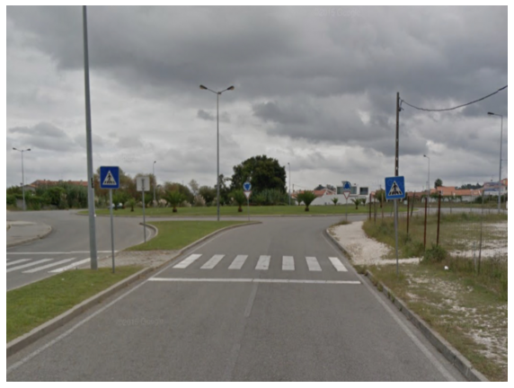
Image 2
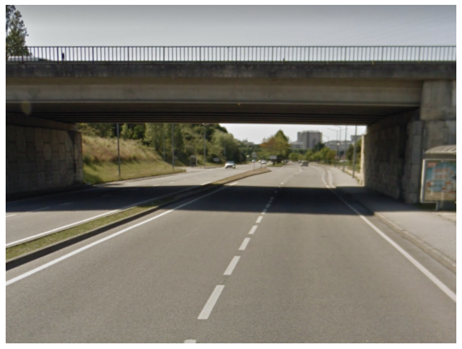
Image 3
As we can see, and compared to last week, this week's results were far superior.
This was because we trained all the layers of the model which led us to obtain an accuracy of 91%. The upcoming work will
be focused on trying different datasets and improving the accuracy of our models.
Road & Lane Marks
Image 1
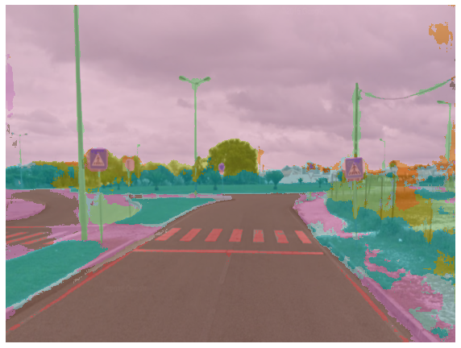
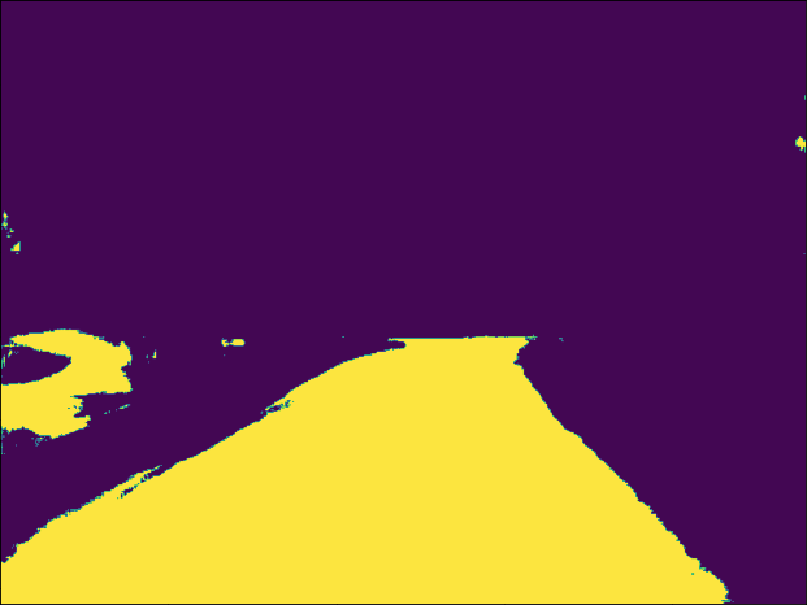
Image 2
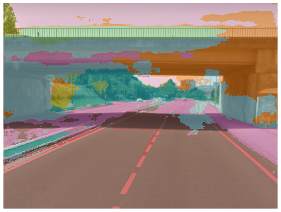
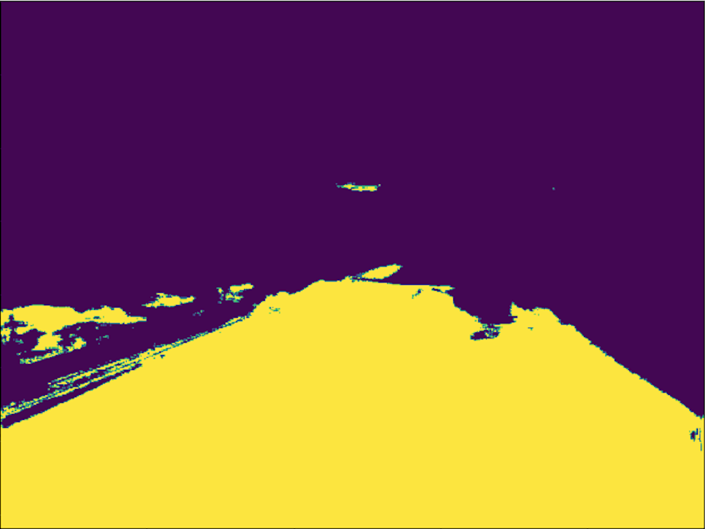
Image 3
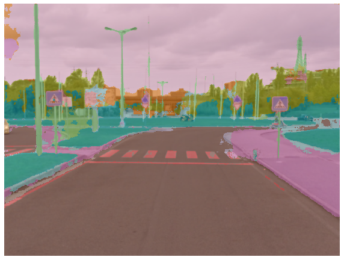
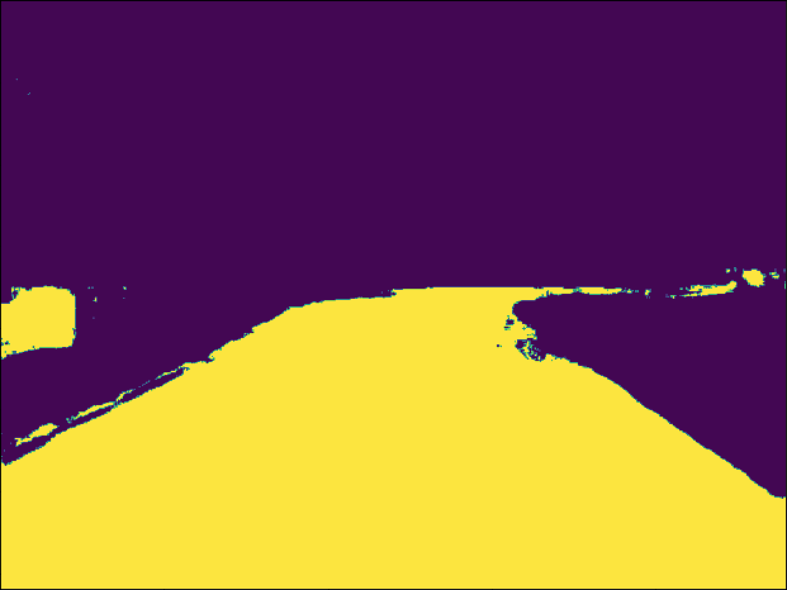
After having performed the segmentation of the individual images,
I proceeded with the conversion of the areas that interested me.
At the moment, I only focused on the classes that include road and lane marks, and through the tensors
of the segmented images I was able to see in which pixels these classes had been detected. With this,
I created an array where the regions where the car can drive are represented by the yellow ones
in the figures above and the sections that we are not interested in at the moment represented in purple.